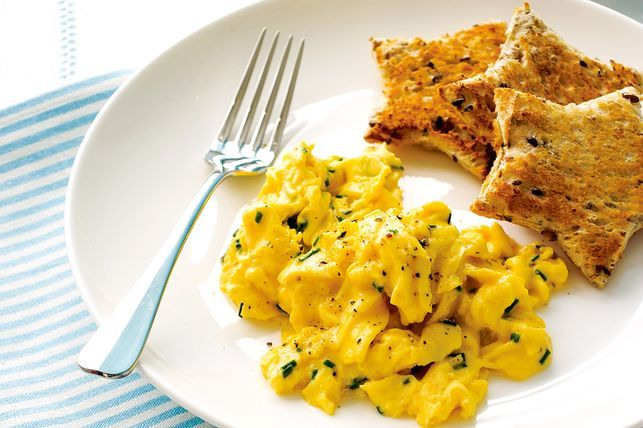

Scrambled Eggs with Chives

Description
Simple declicious scrambled eggs with chives. Sometimes simple is the answer.
Ingredients
- 16 eggs
- 1/2 cup thickened cream
- 50g of butter, chopped
- 2 tbsp finely chopped chives
Steps
- Using a whisk, whisk eggs
Unsure of the quantity needed?
Click on the underlined ingredient to reveal the quantity. No need to flip back and forth!
and cream together in a large bowl for 2 minutes (egg should fall in a thin stream from whisk). Set aside until foam has settled.
- Meanwhile, preheat grill on high heat. Using a 9cm star cookie cutter, cut out 1 star from each bread slice. Place stars in a single layer on grill tray. Grill for 1 minute each side or until toasted. Keep warm until ready to serve.
- Heat a 28cm (base) non-stick frying pan over medium heat until hot. Add half the butter and swirl to coat pan base. As last of butter melts, add half the egg mixture. Cook for 1 1/2 minutes or until mixture starts to set. Using a spatula, push set egg towards centre of pan, tilting pan to allow uncooked egg to run over base. Cook for 2 minutes or until eggs form creamy curds. Stir in half the chives. Transfer to a plate.
- Wipe pan with paper towel. Repeat with remaining butter, egg mixture and chives. Season with salt and pepper and serve immediately with toast.